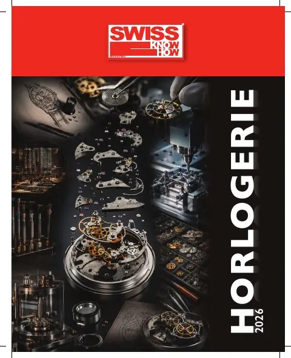
Horlogerie · 2026 · Arc jurassien
Swiss Knowhow – Horlogerie 2026
Édition de mai 2026 du magazine Swiss Knowhow consacrée à l'horlogerie suisse, dans un contexte d'exportations en léger recul, de droits de douane américains et de franc fort. Après les interviews du président de la FH et du directeur du salon EPHJ, le numéro présente une trentaine de sous-traitants et fournisseurs de l'Arc jurassien et de Suisse romande : cadraniers, assembleurs, décolleteurs, spécialistes du saphir, des ressorts, de la galvanoplastie, de la CFAO et des machines-outils.
Sommaire · 29 articles
« Horlogerie suisse entre turbulences et résilience »
Interview d'Yves Bugmann, président de la Fédération horlogère
 Interview
InterviewEPHJ 2026 – Un salon unique au monde par son positionnement
Interview d'Alexandre Catton, directeur de l'EPHJ
 Publireportage
PublireportageArteCad SA – Excellence dans la fabrication de cadrans
Une référence du cadran horloger installée à Tramelan depuis 1885
 Publireportage
Publireportage2b8 Sàrl – Du micron à la décoration, l'horlogerie dans tous ses états
Le « couteau suisse de l'horlogerie » à Marin-Epagnier
 Publireportage
PublireportageBrasport Group – Du bracelet de montre à la maroquinerie de prestige
Le groupe chaux-de-fonnier fête ses 80 ans
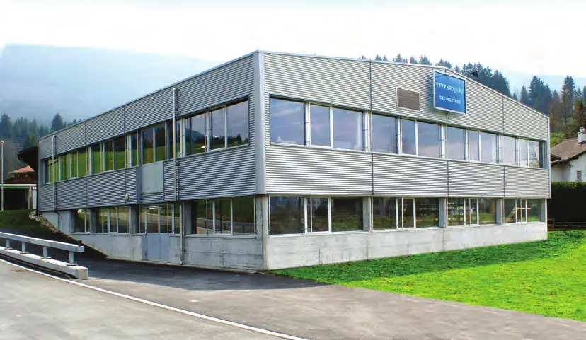
PublireportageBroquet Décolletage SA – L'art du micro-composant au service de la haute horlogerie
Décolletage de précision à Bévilard
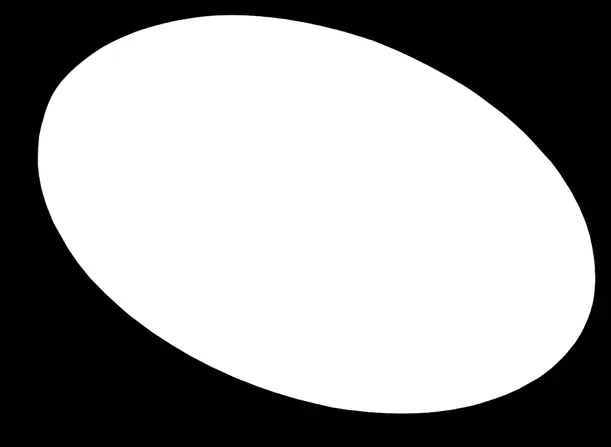
PublireportageGB Microfab – « Des artisans technologues » : microtechnologies pour une horlogerie d'exception
Micro et nanotechnologies appliquées aux composants horlogers
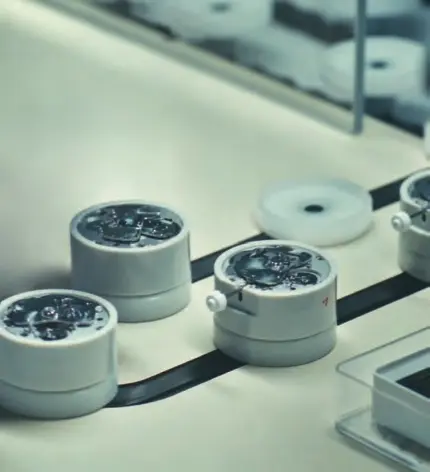
PublireportageGilbert Petit-Jean SA : l'expérience au cœur du monde horloger
Trois entreprises horlogères pour une même vision
BBHG SA : l'habillage horloger et joaillier maîtrisé de A à Z
Boîtes, fermoirs, bracelets et désormais habillage joaillier
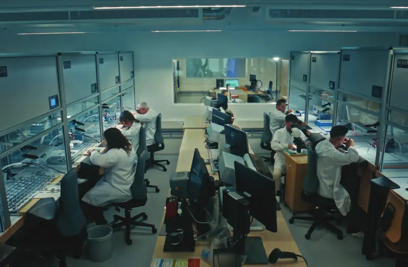
PublireportageBéguelin Sàrl : de l'outillage de précision aux solutions personnalisées
Huit décennies de mécanique de précision
Les Fils d'Henri Frei SA – Depuis 1924, la bienfacture comme héritage
Composants horlogers de haute précision à Court
La Cible SA – L'art de transformer la matière première en valeur ajoutée
Tréfilage et profilage de matière pour le décolletage à Pontenet
Muller Machines SA – Au cœur du marché mondial de la machine-outil d'occasion
Plus de 2000 machines en stock à Brügg et le musée Centre Muller
Favre-Steudler SA – Un savoir-faire unique dans la fabrication de ressorts
Ressorts industriels sur mesure à Bienne
Oesch GmbH – Spécialiste pour les accessoires métalliques
Éléments du bracelet cuir et accessoires d'écrins de luxe
ICAM SA – Renforcer sa position dans le monde de la digitalisation des ateliers de production
ICAM et Productec, deux sociétés sœurs propriété de Cyrille Monnin
Productec SA – Le numérique au service de l'optimisation des processus de fabrication
CFAO et programmation CNC à Rossemaison
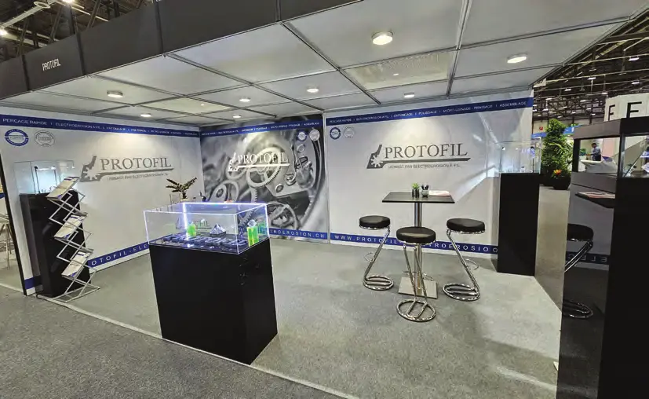
PublireportageProtofil Sàrl – Précision et complexité au bout du fil
L'atelier d'électroérosion de la vallée de Joux fête ses 10 ans
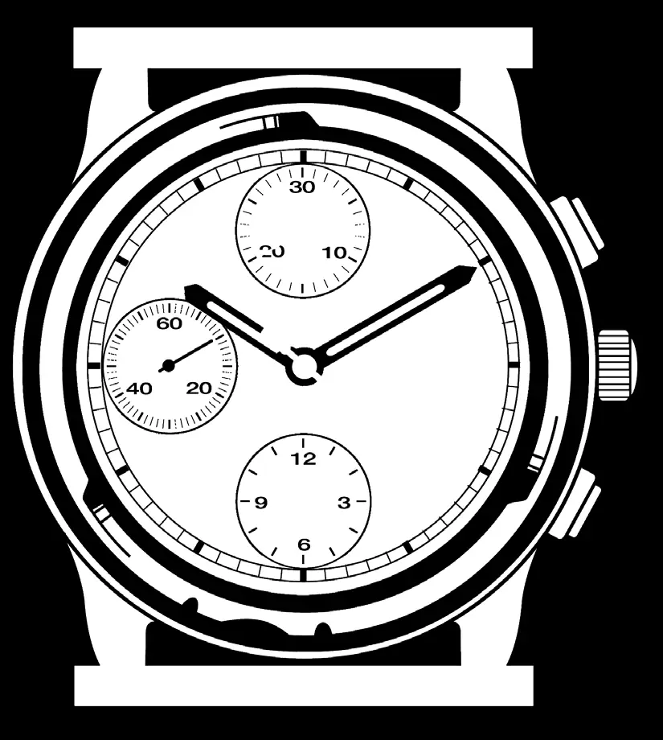
PublireportageRessorts Industriels SA – Des ressorts de haute précision jusque dans les mouvements à complication
RISA à Courgenay
Serge Meister SA – Le partenaire privilégié des décolleteurs
Serrages de haute précision au métal dur à Court
SEBAL SA – Un verre de saphir local et bas-carbone
Production indépendante de verres saphir à Bassecourt
TIMSAPH SA – Horlogerie responsable ; le saphir devient vertueux
Production de saphir 100 % suisse à faible impact carbone
STOCO SA – Spécialiste de l'assemblage horloger
Le pré-assemblage au service des manufactures
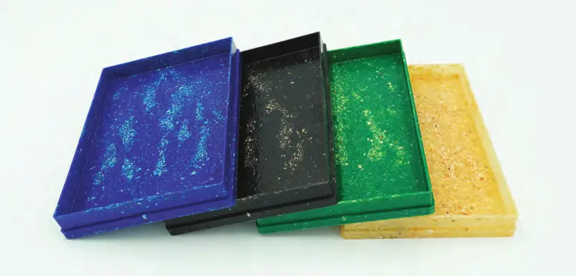
PublireportageTechnoformage SA – Le biodégradable pour emballages et conditionnements
Plateaux de conditionnement en copeaux de bois et résine
Technofinish SA – La robotique comme soutien au polissage
Un cobot pour copier le geste humain
Vicro SA – Le savoir-faire de l'artisan au service de l'habillage horloger
Décalque, laque, Superluminova, collage et gravure laser à Porrentruy
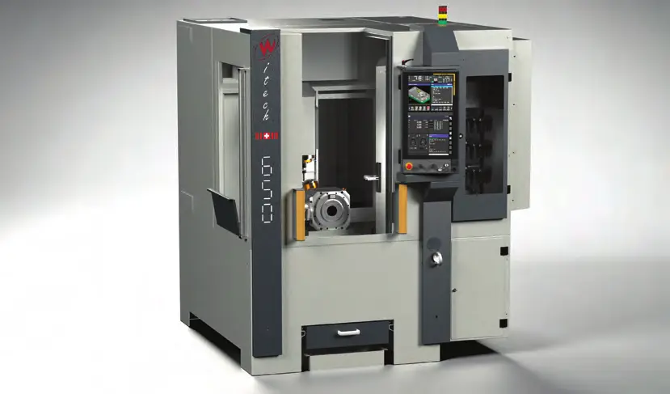
PublireportageWitech SA – Des machines-outils compactes au service de l'innovation industrielle
Centres d'usinage et tours ultra-compacts à Bassecourt
MW Programmation SA – Au cœur de la CFAO depuis 40 ans
Logiciels et services de commande numérique à Malleray
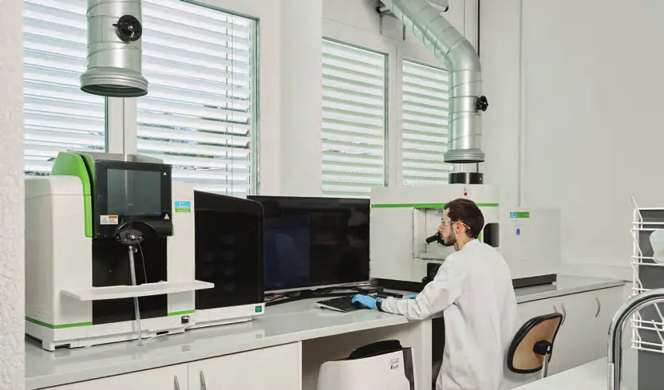
PublireportageSTS Saulcy Traitement de Surface – Un laboratoire unique, moteur d'innovation en galvanoplastie
Traitements de surface pour l'horlogerie, le médical et la connectique
Entreprises de ce numéro · 32
2b8 Sàrl
Usinage de composants horlogers, décoration et émail grand feu
ArteCad SA
Fabrication de cadrans et d'appliques

Bardolab
BBHG SA
Habillage horloger et joaillier
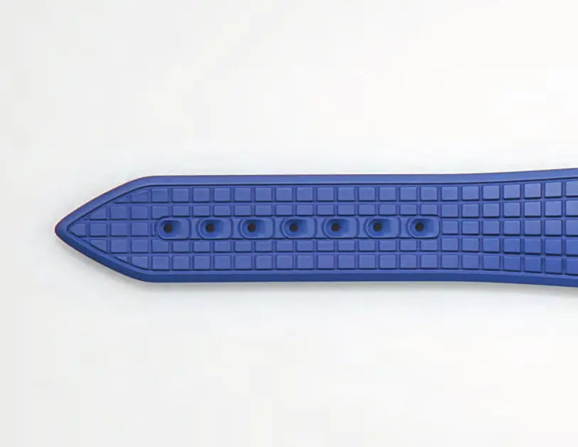
BDL5
Regroupement d'entreprises de l'artisanat de luxe suisse
Béguelin Sàrl
Outillage de précision et outils horlogers
Brasport Group (Brasport SA)
Bracelets de montres, maroquinerie de luxe et usinage
Broquet Décolletage SA
Décolletage de précision
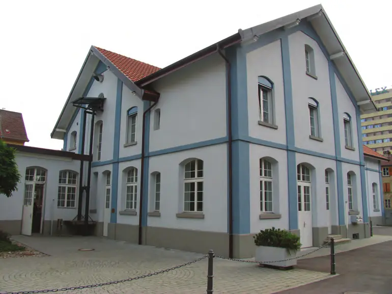
Centre Muller
Musée de la machine-outil et salle événementielle
EPHJ – Salon international de la haute précision
Salon professionnel
Eric Chabod
Favre-Steudler SA
Fabrication de ressorts industriels
Fédération de l'industrie horlogère suisse FH
Association faîtière de l'industrie horlogère
GB Microfab
Microtechnologies appliquées aux composants horlogers
Gilbert Petit-Jean SA
Assemblage de mouvements, anglage et décoration
ICAM SA
Logiciels FAO et mise en réseau d'ateliers
La Cible SA
Tréfilage et profilage de matière pour le décolletage
Les Fils d'Henri Frei SA
Décolletage, taillage et roulage de fournitures horlogères
Muller Machines SA
Commerce de machines-outils d'occasion
MW Programmation SA
Logiciels CFAO et services de commande numérique
Oesch GmbH
Distribution d'accessoires métalliques pour bracelets cuir et écrins
Productec SA
Logiciels CFAO et programmation CNC
Protofil Sàrl
Électroérosion à fil et micro-usinage
Ressorts Industriels SA (RISA)
Ressorts de haute précision
SEBAL SA
Verres de montres en saphir
Serge Meister SA
Serrages de précision pour décolleteuses
STOCO SA
Machines et sous-traitance de pré-assemblage horloger (T0)
STS Saulcy Traitement de Surface SA
Galvanoplastie et traitements de surface
TechnoFormage SA
Emballages thermoformés et injectés
TIMSAPH SA
Production de saphir synthétique
Vicro SA
Habillage horloger (décalque, laque, Superluminova, collage, laser)
Witech SA
Machines-outils compactes
Aucun résultat.